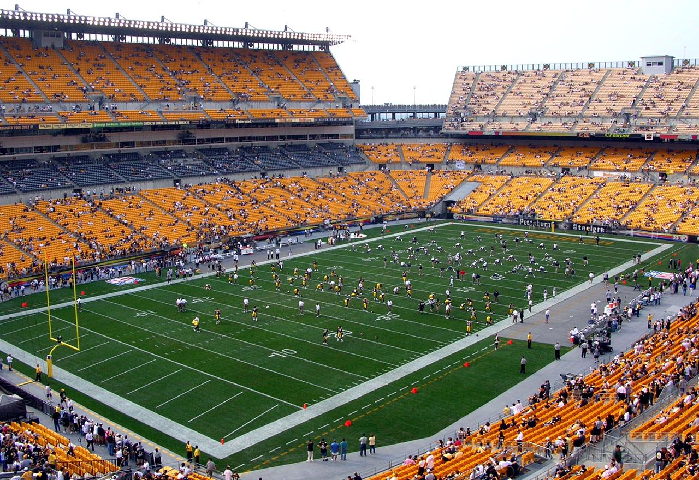
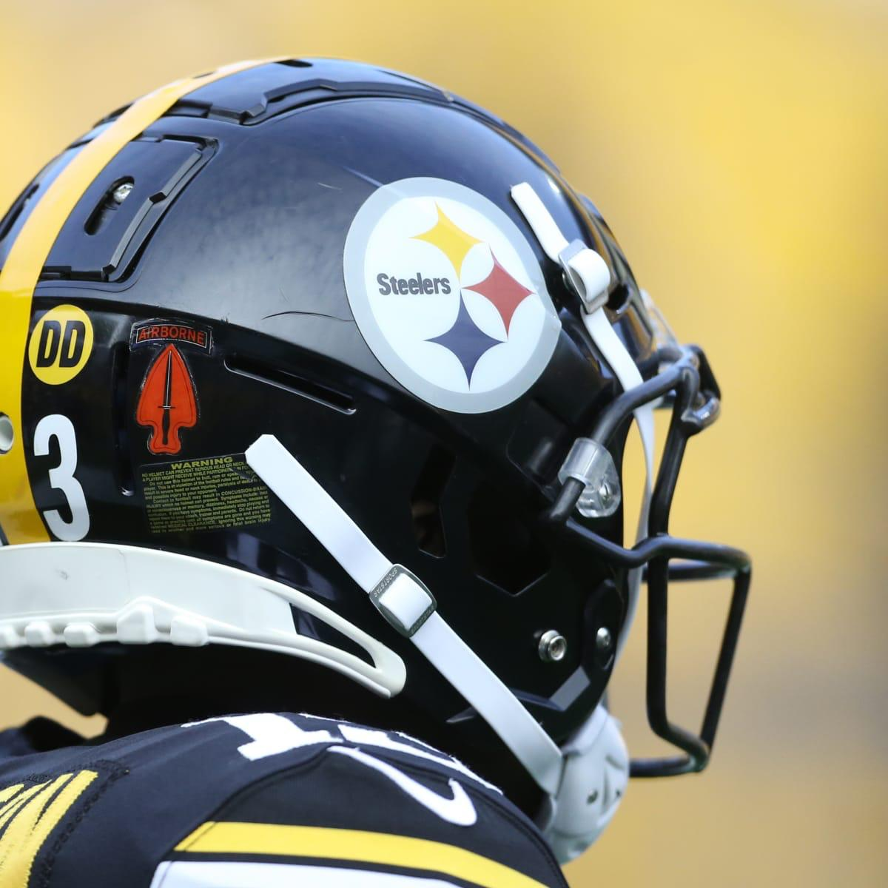
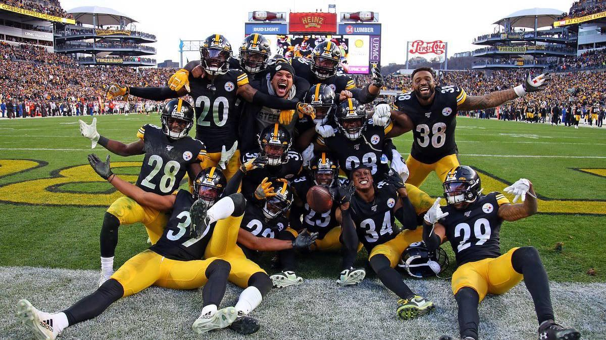

Pittsburgh Steelers |
|
Mejores Jugadas |
Quienes son?Los Pittsburgh Steelers (en español Acereros de Pittsburgh) son un equipo profesional de fútbol americano de los Estados Unidos con sede en Pittsburgh, Pensilvania. Forman parte de la AFC Norte de la National Football League (NFL). Juegan en el Heinz Field con sede en la ciudad de Pittsburgh Pennsylvania, Estados Unidos. Los Steelers fueron originalmente fundados como los Pittsburgh Pirates el 8 de julio de 1933 por Art Rooney, tomando su nombre original del equipo de béisbol del mismo nombre, como práctica común de los equipos de la NFL en aquel momento. La propiedad de los Steelers se ha mantenido dentro de la familia Rooney desde su fundación.3 Conocidos como uno de los equipos más ganadores de la historia de la NFL, los Steelers cuentan con una numerosa afición, apodada Steeler Nation. |
Estadio local de Pittsburgh Steelers |
|
|   | |
Equipo | |
|  | |
Historia del equipoLos Pittsburgh Steelers, debutaron en la NFL como los Pittsburgh Pirates el 20 de septiembre de 1933, donde perdieron 23-2 ante los New York Giants. En la década de 1930, el mejor puesto de los Pirates fue un segundo lugar en su división y un registro de 0.500 (1936). Pittsburgh hizo historia en 1938 con la firma de Byron White, pero solamente jugó un año con los Pirates antes de firmar con los Detroit Lions. Antes de la temporada de 1940, los Pirates pasaron a llamarse a sí mismos los Steelers.. El nuevo nombre rinde homenaje a la industria más grande de la ciudad productora de acero.1011Durante la Segunda Guerra Mundial, los Steelers sufrieron escasez de jugadores. A causa de ello, se fusionaron dos veces con otras franquicias de la NFL para formar un equipo. Durante la temporada de 1943, se fusionaron con los Philadelphia Eagles formando los "Phil-Pitt Eagles" y conocidos como los "Steagles". En 1944, se fusionaron con los Chicago Cardinals y eran conocidos como Card-Pitt (o, en tono burlón, como las "Carpets" ("Alfombras" en español)).También es apodado el rey de copas por ser el club con más títulos a nivel local e internacional en la historia de la NFL con 36 en total. |
|